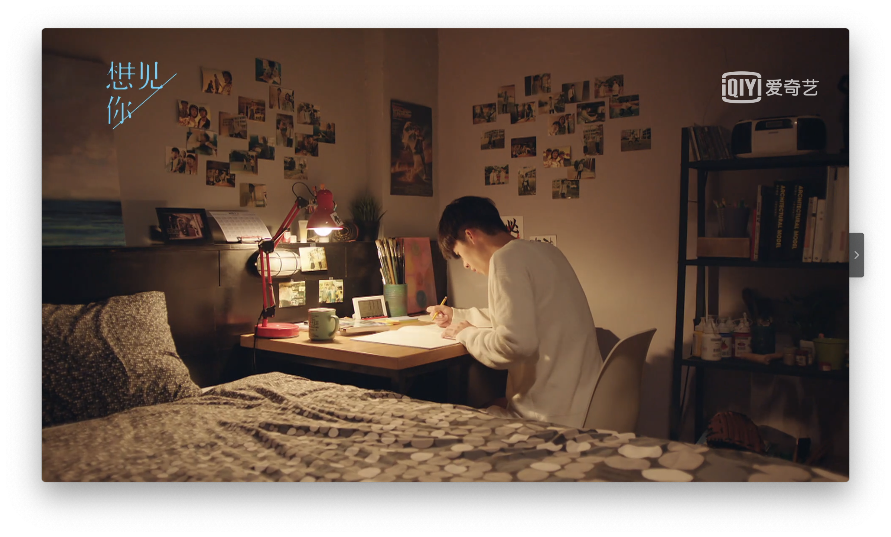

正是黄雨萱对王诠胜深深的不舍，才会让李子维爱上那个独立的陈韵如。
我发现到最后我忍住不看最后两集，不是因为黄雨萱思念李子维，而是我舍不得他们。
我本以为黄雨萱像我一样，最后只能做观众，在知道所有的命运之后而束手无策，什么也无可改变。只能任凭美好的东西在眼前慢慢消逝，即使从一开始就知道会有这样的结局。这种无奈，和曾经的美好，太残酷了。
我最喜欢的是2003年的李子维到2010年成为了王诠胜作为学弟追求黄雨萱的故事。那种发觉了自己所爱而为之努力的情节无论出现多少次，我都不会感到厌倦，而是一次又一次地被打动。为了一个笑容而付出一生，可是最浪漫的事啊。

我希望我能永远记得，李子维在准备联考的时候，挑灯夜战的那个模样。即使已经疲倦到眼皮沉重，即使眼前的笔已经摇摇晃晃，可只要想到黄雨萱，就又获得了动力。
我希望他们的结局是美好的，我希望天下有情人终成眷属，我希望自己也能一天能拥有脱离尘俗的真爱。
值得托付一生，这个命题又被提起了。我觉得，每个人都曾经有过这样青春的期待吧。我们并不是对这个世界充满了绝望，而正是拥有了无数的期望。
每次当我翻开电脑屏幕的时候，我是真的沉入这个故事里面了，无法自拔。
谢谢《想见你》。
若我要许下第三个愿望，必定是___。